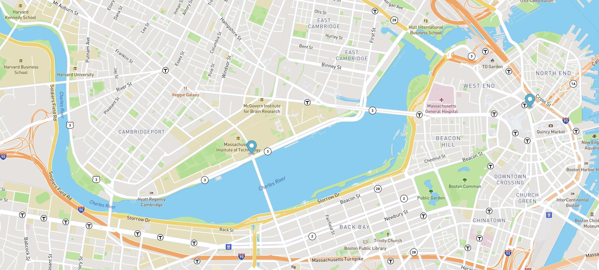

Pacman project
Try to make a cool pacman walk on both sides of your screen.
Github repo for Pacman
Eye project
Use the mouse for moving an eye!
Github repo for Eye
Real Time Bus Tracking Project

Make request with real time api calls, that will show you a bus moving!
Github repo for Real Time Bus Tracking